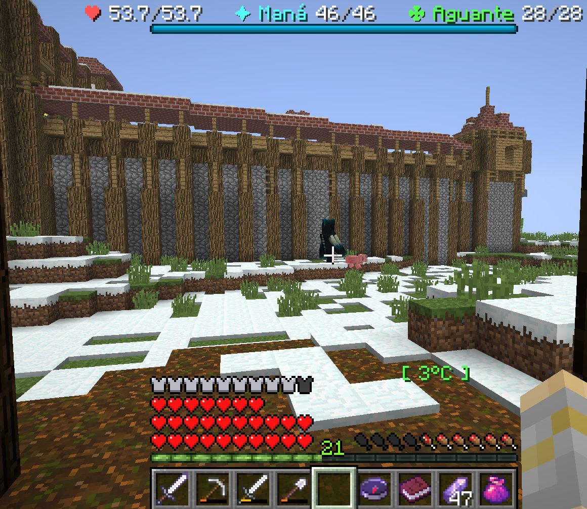
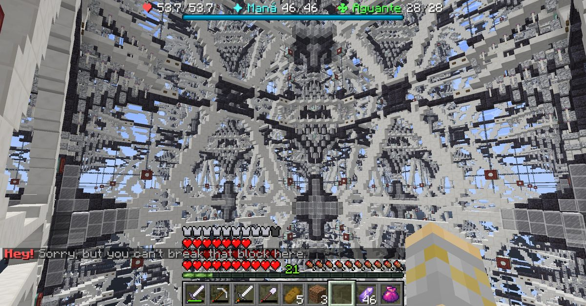
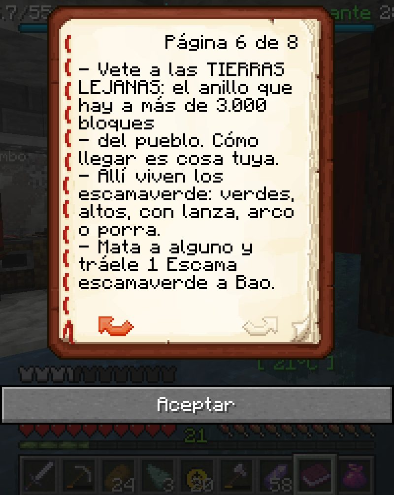
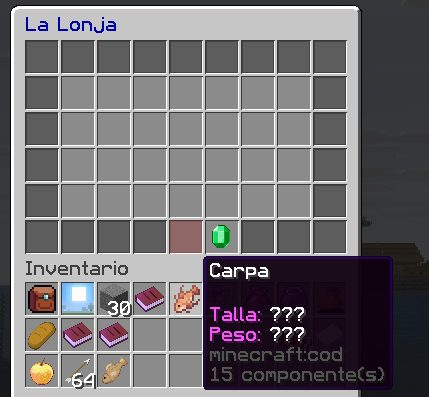
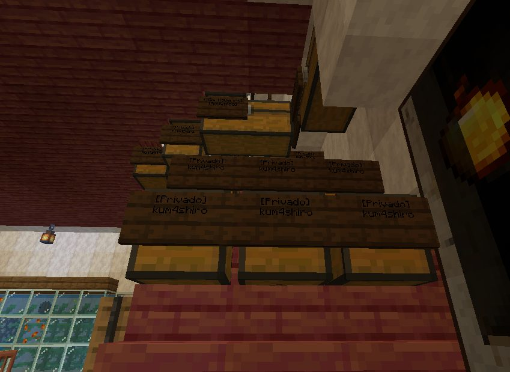
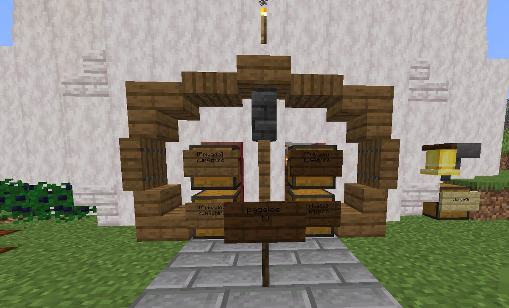

Boletín Oficial del Ayuntamiento del Reino · Se informa, no se alarma
EL HERALDO DEL REINO
Número 3828 de septiembre de 2026De la madrugada del lunes 28 a la mañana del miércoles 30 de septiembre · número doble
UNA CRIATURA OSCURA, DEL ALTO DE DOS VECINOS, PASEA ENTRE LOS GIRASOLES DE LAS CABALLERIZAS CON UN CERDO AL LADO, Y EL MINISTERIO LO LLAMA «MOVIDAS DIMENSIONALES»
El martes a las 18.46, Gaaraham03 colgó dos fotografías y una pregunta: «¿por qué?». En las dos se ve, junto al muro de las caballerizas, una criatura oscura con el pecho encendido en celeste, y en una de ellas, a su lado, un cerdo que no parece preocupado. El Ministerio contestó en un minuto: «Movidas dimensionales». Es la segunda explicación que da en tres días, después de las interferencias. Además, en este número doble: la Grieta que no devolvía a nadie y la ventanilla que tardó catorce horas en enterarse; una vecina que anunció su propia muerte un minuto antes de que ocurriera; una entrada tapiada con arcones con un cartel que dice «págalos tú», y tres altas nuevas que llegaron a un Reino que todavía estaba recogiendo el domingo.
Redactado por la Oficina de Prensa del Ayuntamiento
PORTADA
Una criatura sin empadronar, junto a las caballerizas, a tres grados y con un cerdo
El martes a las 18.46, Gaaraham03 colgó en el tablón de fotografías del
vecindario dos imágenes y una sola palabra: «¿Por qué?». Esta Oficina las reproduce
porque la pregunta es buena y porque nadie del Ayuntamiento sabe contestarla.
En las dos se ve lo mismo, desde dos sitios distintos: una criatura oscura, del alto
de dos vecinos puestos uno encima del otro, con el pecho encendido en un celeste que no
sale de ninguna antorcha. Está de pie delante de las caballerizas, entre las espigas y
los girasoles, sobre un suelo con nieve. En la primera fotografía la acompaña un cerdo
rosa, que no se aparta, no huye y, a juzgar por la postura, no tiene ninguna queja.
El Ministerio contestó en un minuto, a las 18.46, con dos palabras: «Movidas
dimensionales». Gaaraham03 contestó con otra: «Aaa». Y con eso el asunto quedó,
a efectos administrativos, explicado.
Esta Oficina recuerda que el domingo, cuando un caballo empezó a cantar después de la
Audiencia, el Ministerio lo atribuyó a unas «interferencias». Son dos explicaciones
en tres días y las dos tienen la virtud de no explicar nada, que es lo que se espera de una
explicación oficial. La criatura no consta en el padrón, no tiene domicilio conocido y,
en las dos jornadas que cubre este número, no figura como causa de ninguna defunción.
Se le abre expediente por estancia sin empadronar. Al cerdo, ninguno: estaba en su casa.
Martes, 18.46. Entre las espigas, los girasoles y la nieve, delante de la puerta de las caballerizas: oscura, del alto de dos vecinos y con el pecho encendido. No ha pedido licencia de ningún tipo.Archivo Municipal · pase el ratón para revelarla

La misma criatura, un minuto antes, delante del muro. El cerdo rosa que tiene al lado no ha presentado denuncia. El termómetro marca tres grados.Archivo Municipal · pase el ratón para revelarla
SERVICIOS
La Grieta que no devolvía a nadie, y la ventanilla que tardó catorce horas en saberlo
A las 04.29 de la madrugada del lunes, con la Audiencia todavía caliente,
Rawson98se cayó del mundo. No de un tejado ni de un acantilado: del mundo,
que es lo que dice el registro. A las 04.35 se lo explicó a Mazitrvrs en la plaza:
«Acá ando, me morí y tenía cama a la loma del culo», y la distancia exacta:
«Estoy tres mil bloques lejos de casa».
A las 05.19 añadió lo que le importaba: «No tengo más misiones». Mazitrvrs le
aconsejó denunciarlo, y él contestó que ya lo había hecho: a las 05.16 había escrito en
la ventanilla, con la página del diario de encargos delante, «se me [atascó] esta
misión, me morí en el intento». La misión era La Fractura del Nexo, y la línea
que se le había quedado parada decía «Ve a la Grieta (basta con llegar)». A las
06.16, Gaaraham03 se sumó con tres palabras: «Igual a mí».
La ventanilla no contestó hasta las 19.12 del martes. En medio, Gaaraham03 volvió a
entrar y a las 18.57 mandó una fotografía desde dentro de la Grieta —una catedral blanca y
negra que no se acaba por ningún lado— con una consulta práctica: «¿Aquí qué se supone que
haga? ¿Me tiro al vacío?». El Ministro le preguntó si se había perdido y añadió un dato
que esta Oficina no sabría interpretar: «Es extraño, debería ser de noche ahí, para ver el
camino». A las 19.00 el vecino ya lo había entendido: «es seguir los faros azules,
pero no se ven casi», y aclaró que él se había imaginado un faro de los de costa, con
su torre, y no un farol de los pequeños. Mandó una foto de cada uno, para que se viera la
diferencia.
A las 19.12 la ventanilla dio la explicación: quien moría dentro de aquel mundo y tenía
una cama puesta volvía al pueblo, y ya no había forma de regresar a la Grieta. Se
corrigió en el acto. A Gaaraham03 le devolvieron el encargo a su principio. A Rawson98 hay que
pillarle dentro para hacer lo mismo, y no se le pilló: entró a las 00.25 del miércoles,
escribió «ya estoy dentro del Reino, ¿y ahora?», y a esa hora la ventanilla ya no
estaba. Sigue pendiente.

Dentro de la Grieta, martes a las 18.57. Gaaraham03: «¿Aquí qué se supone que haga? ¿Me tiro al vacío?». Arriba, en rojo, el aviso de siempre: ahí no se puede romper nada.Archivo Municipal · pase el ratón para revelarla
ADMINISTRACIÓN
«Duke? Help»: un vecino llama al Emperador anterior en la plaza, y contesta el nuevo
La prueba que acompaña la primera petición de título nobiliario presentada ante el nuevo régimen: los cuatro encargos de Control de Plagas del Guardabosques Felipe Buñuelo, completados. Lunes, 01.24.Archivo Municipal · pase el ratón para revelarla
A las 18.51 del martes, Gaaraham03 escribió en la plaza dos palabras dirigidas a
alguien que no estaba: «Duke?», y a las 18.54, «Help». El Emperador anterior
no contestó, porque no estaba, como no está desde el día 24. Contestó, veintiún minutos más
tarde y por la ventanilla, el nuevo. A las 19.11 el vecino escribió «ty» en la
plaza, y a las 19.41, en la ventanilla, «gracias, tqm». Es la segunda declaración de
cariño que recibe el régimen. Las dos son de él.
El lunes a la 01.24, Cliqueame presentó ante el palacio, con prueba documental, la
primera petición de título de la que hay constancia: «agrega a mis títulos El
controlador de plagas». La prueba son los cuatro encargos de Control de Plagas del
Guardabosques —invierno, otoño, primavera y verano— completados. No consta resolución. Esta
Oficina, que no tiene competencias en títulos, sí puede dar fe de que las cuatro estaciones
se completaron, porque el Reino las ha visto pasar las cuatro en una semana.
Y el miércoles a las 12.48, el Ministro Pan dio en la ventanilla la primera
descripción oficial de cómo trabaja el nuevo Emperador. Literal: «El Servicio Técnico se
activa periódicamente, ya que no puede estar siempre encendido; cuando vuelva a estar
disponible, te avisará». Es decir, que el Reino tiene un gobierno que se enciende. El
Ministerio no ha aclarado cada cuánto. Esta Oficina, que sale cuando él lo dice, no tiene
nada que añadir.
Sobre el Emperador anterior: el domingo habló en la ventanilla para decir que el despacho
que buscaba el Gremio «no es el despacho del ministro, es mi despacho». El
reglamento de este periódico dice que su expediente se cierra cuando vuelva a hablar
en el Reino, y la ventanilla está en la puerta. El expediente sigue abierto.
EL PARTE DEL PULSO
La escama que no valía, el despacho que sí existe y una columna verde que se ve desde el tejado
La escama de Bao. El lunes a las 08.43, Gaaraham03 murió en las Tierras
Lejanas a manos de un Arquero Escamaverde, que es justo lo que había ido a buscar. A las
08.52 escribió en la ventanilla: «No acepta la escama». El Ministro contestó a las
12.31 que lo reportaría «a mano». El martes, la ventanilla reconoció que la culpa
era de la casa: Bao pedía una escama «un pelín distinta» de la que sueltan los
escamaverde. Se corrigió, y la que ya llevaba el vecino le vale. Con el Ojo del Guardián
pasaba lo mismo y también se corrigió, aunque de ese no se había quejado nadie.
El despacho que no existía. En el número 36, el Ayuntamiento declaró no tener
constancia de que en su edificio hubiera ningún despacho a nombre de un ministro con la inicial
P. El martes a las 19.12, la ventanilla le dijo a Gaaraham03 dónde está: en el
Ayuntamiento, en la planta de arriba, y que al acercarse vería «unas chispitas en el
sitio exacto». Esta Oficina toma nota de que el despacho existe, de que está en su propio
edificio y de que se lo ha tenido que decir otro.
La columna verde. A las 19.21, la ventanilla anunció una nueva dotación: cada
sitio del encargo de los micrófonos donde todavía falte uno tendrá una columna de luz
verde que asoma por el tejado y se ve desde lejos, para que nadie tenga que adivinar cuál
es el despacho bueno. Esta Oficina celebra la medida y hace constar que, si el despacho tiene
una columna verde encima, ya no podrá decir que no sabe dónde está.
Ninguna de estas medidas reviste gravedad. Todas estaban previstas desde que alguien se
quejó.

Lunes, 08.52. El encargo de Bao dice «tráele 1 Escama escamaverde». Gaaraham03 se la llevó nueve minutos después de morir buscándola. Bao no la aceptó.Archivo Municipal · pase el ratón para revelarla

La Lonja, miércoles a las 00.46: una carpa de talla y peso desconocidos. Rawson98 preguntó por qué no se podía vender y cómo se sabe lo que es. No consta respuesta en la jornada.Archivo Municipal · pase el ratón para revelarla
SUCESOS
Una entrada tapiada con arcones privados, un cartel que dice «págalos tú», y una denuncia que se quedó corta

Martes, 06.51: «Ah, puso más». Tres hileras de arcones con su cartel de propiedad, todos a nombre de kum4shiro, en la entrada de otra persona.Archivo Municipal · pase el ratón para revelarla
A las 06.37 del martes, GabbyQuill635 presentó en el tablón de denuncias un
requerimiento con fórmula de autoridad: «Se le pide al ciudadano kum4shiro que quite los
cofres de la entrada del ciudadano», porque, sigue el escrito, no cuenta «con permiso
de restringir entradas ajenas». Y la advertencia: «De hacer caso omiso, se tendrán
que tomar medidas». Adjuntó una fotografía de la entrada: un arco de madera, cuatro
arcones a nombre de kum4shiro y, plantado delante, un cartel con dos palabras que esta Oficina
reproduce en la sección de Urbanismo.
Trece minutos después, a las 06.51, la denunciante añadió una segunda fotografía y una
actualización del expediente: «Ah, puso más». Puso más. En la imagen hay tres hileras
de arcones, todos con su cartel de propiedad, todos a nombre del mismo vecino.
Esta Oficina recuerda que el domingo, cuando kum4shiro denunció que le habían tapado
su zona subterránea, el Ministerio le contestó que aquello era «un embargo por la
multa». Dos días después, el embargado ha empezado a embargar. No consta que la multa se
haya pagado, ni por él ni, como sugiere el cartel, por nadie.
El Ministerio respondió al requerimiento el miércoles a las 12.47, con una
precisión de competencias: «Policía, usted no impone». Y en la plaza, a las 07.51 del
martes, la denunciante ya había anunciado el paso siguiente —«si kuma no paga y quita los
cofres, lo demando, y me representas; yo sí te pago»— a Gaaraham03, que aceptó en el acto
y rebajó la minuta: «Asu, a poco; si hasta gratis, mi estimada». El abogado del Reino
sigue sin cobrar un solo caso. El juzgado sigue sin existir.
URBANISMO
Expediente 0082 — «la entrada de los arcones»

Un arco de madera con farol, cuatro arcones con cartel de propiedad, y en medio, a la altura de los ojos, el cartel que da nombre al expediente: «pagalos tu». Calificación: NO ES UNA PUERTA, ES UN RECIBO.Archivo Municipal · pase el ratón para revelarla
La Oficina de Urbanismo inspecciona una obra que no es una casa ni pretende serlo: es la
forma de cerrar la casa de otro. Un arco de madera bien rematado, con su farol colgado
en la clave, y debajo, donde iría la puerta, cuatro arcones apilados de dos en dos, con
su cartel de propiedad cada uno.
El técnico reconoce oficio en la carpintería del arco, que es mejor que la de muchas
viviendas que esta Oficina ha suspendido. Lo que no puede aprobar es el uso: un arcón
privado en la entrada ajena no es un cerramiento, es un mensaje. Y el mensaje está escrito en
el cartel del centro, sin tilde y en minúsculas: «pagalos tu».
Calificación: NO ES UNA PUERTA, ES UN RECIBO. El técnico deja constancia de que no
ha podido averiguar qué hay que pagar ni a quién, y de que el cartel tampoco lo
dice, que es lo que tienen en común todos los recibos de este Ayuntamiento.
SOCIEDAD
Tres altas, dos recién llegadas que preguntan qué hay que instalar, y una vecina que contesta a todas
El Reino ganó en la noche del martes tres vecinos: XxmorilloxX201 se dio de
alta a las 20.33, Lusher_ a las 23.56 e Izaf_BCN a las 00.30. Izaf_BCN tardó
ocho minutos en ganarse el mérito de Cazador de Monstruos, que es lo que tarda en
encontrar un monstruo cualquiera que salga de noche en este Reino.
En el grupo vecinal, el lunes a las 23.52, una tal Chari se presentó con
sinceridad: «Ando un poco perdida; soy nueva acá». A los diecisiete minutos ya tenía
dos respuestas: la de Kaori —«Hay eventos. Y podés hacer tu casita donde no esté
protegido. Si me ves jugando, me podés pedir ayuda, owowo»— y la del Ministerio, que le
indicó dónde estaba lo básico y le recordó que en la plaza de llegada hay «un sistema de
información». El martes a las 06.46 preguntó un tal EME qué cosas tenía que
instalar para entrar, y Kaori le contestó a las 07.29: «Ahí está todo lo que necesitas,
OWO». Esta Oficina reitera lo que lleva semanas diciendo: Kaori es la oficina de acogida
del Reino. No tiene nombramiento. Tampoco tiene sueldo.
A las 06.48 del martes hubo un reencuentro en la plaza. Rawson98 saludó a GabbyQuill635 y le
preguntó qué había pasado, que ya no se la veía; ella contestó con un signo de interrogación, y
él aclaró: «Soy Agustín». Resuelta la identidad, ella explicó que había estado
ocupada con otros asuntos y que «ya creo que me desocupé». Esta Oficina celebra el
regreso, que duró hasta la sección de esquelas.
Y en el tablón de fotografías, la madrugada del lunes, XchavitoX publicó sus
grabaciones de la Audiencia con una disculpa a Mazitrvrs: «Perdón, solo se grabaron fails
tuyos». Mazitrvrs las recibió con deportividad —«jajajaja»— y con una sola
palabra, sin explicación: «Oro».
Necrológicas · Registro Civil del Reino
LA ESQUELA
El Ayuntamiento del Reino participa las defunciones de la jornada que a su juicio merecen constar, y ruega una oración por quienes ya han vuelto.
LA ESQUELA
GabbyQuill635
Que preguntó a las 07.36 del martes dónde estaba el banco, sin que conste que lo
encontrara, y a quien a las 07.48 Gaaraham03 le hizo la pregunta que nadie le hace a
nadie en este Reino: «¿Te vas a morir, Gaby?». Contestó a las 07.49 con una sola
palabra, «Sí», y en ese mismo minuto entregó la vida a manos de la Bicha del
granero. Gaaraham03 cerró el expediente en el acto: «Ya confirmé, gracias».
Es la primera defunción del Reino anunciada por la difunta antes de producirse, y la
primera confirmada por un tercero después. El Registro no tiene casilla para ninguna de
las dos cosas y las anota en el margen. Dos minutos después, la difunta ya estaba preparando
una demanda; a las 08.27 encontró netherita, y a las 08.37 pidió una sandía.
Ruega la Bicha del granero, que ya firmó la esquela de Rahazzi en este periódico,
que se la deje en paz. Goza de buena salud.
Oficina de Prensa · Negociado de Registro Civil y Defunciones
El parte de la jornada
Vecinos en el Reino
8 en las dos jornadas, y 2 el lunes
Altas
3, las tres el martes por la noche
Máxima concurrencia
3 a la vez, el martes a las 07.48
Defunciones
7, contando la madrugada del domingo
Defunciones anunciadas por la difunta
1
Vecinos caídos del mundo
1
Criaturas sin empadronar fotografiadas en el pueblo
1
Cerdos que la acompañaban
1, sin queja
Explicaciones del Ministerio
2 palabras
Arcones privados en una entrada ajena
más de diez
Peticiones de título nobiliario
1, sin resolver
Horas de la ventanilla sin encenderse
14
Medidas correctoras
4, todas el martes por la tarde
Casos del abogado del Reino cobrados
0
Aviso oficial
AVISO DEL GOBIERNO. Se informa al vecindario de que la ventanilla del palacio
se activa periódicamente, según ha precisado el Ministerio, y de que las peticiones que se
presenten mientras esté apagada se atenderán cuando se encienda, en el orden de llegada.
NOTA DE ESTA OFICINA: a la criatura de las caballerizas se le recuerda que la estancia
sin empadronar está sancionada. Al cerdo que la acompañaba, que no lo está. Y a Rawson98, que
sigue con el encargo a medias, que la próxima vez que entre avise antes de caerse del mundo.